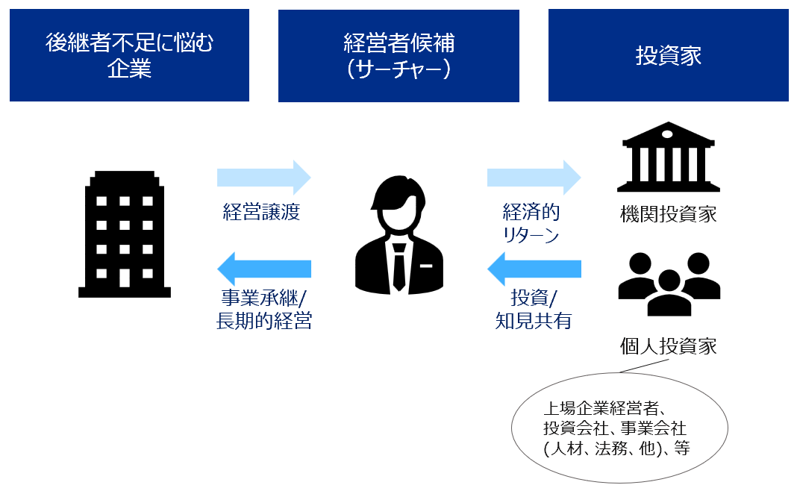

TOP / 事業内容
事業内容
サーチファンドとは

経営者を目指す個人（サーチャー）が投資家の協力をもとに、後継者不足に悩む企業を探索・承継し、自ら経営者として成長させる仕組みです。
1984年、米国スタンフォード大学で誕生し、世界では欧米を中心に既に1,200件超のサーチャーが活動しています。
日本においても、2026年時点で累計50社（トラディショナル型10社、アクセラレーター型40社*）程度のサーチャーが活躍し、徐々に拡大している業界です。
*トラディショナル型は個人が複数の投資家の協力を得ながら進める独立型の方式、アクセラレーター型は一社の支援会社に所属し進める方式を指します。
私たちの提供価値
顔の見える事業承継

私たちは、一社にのみ責任をもって全力で向き合います。
事業会社やPEファンドによる事業承継の場合、承継が決まった後に、後任の経営者を採用することが一般的です。
弊社は、代表の吉川が自ら後継者として、有望な企業様一社の経営に人生をかけて向き合います。オーナー様が築き上げてきた大切な会社、想いをしっかりと引継ぎ、全力で経営に専念します。

計画を描き、共に手を動かす経営
計画を描くだけでなく、自ら手を動かして成果を出します。
代表は、これまで中期経営計画や新規事業の立ち上げなど計画を立てるだけでなく、現場の実行も多数経験してきました。
お客様と開発した新商品を、一緒になり販売し、数億円規模の売上を立てました。
日米600店舗弱を対象とした業務プロセスをITを駆使し改善し、現地スタッフと机を並べて定着化まで担当し、数億円規模のコスト削減を実現しました。
また、後継者不在に悩む中小企業（介護事業者）の経営移管に向け、若手社員へのハンズオントレーニングを共に実施し、定着化しました。
この一気通貫の実行力をもって、承継後の経営に、従業員の皆様と同じ目線で向き合います。
新サービスの企画、新規顧客の拡大

既存のお客様を大切にしながら、新しい売上の柱をつくり出します。
これまで、ITを活用した新商品・サービスの企画・実行、またデータに基づくマーケティング施策の実行を通じて、新規顧客の獲得を進めてきました。
既存のお客様との信頼関係大切にしながら、新しい商機を見出し、会社の売上拡大・成長として結実させます。

多様な経験を持つチームによるバックアップ
弊社は、6か国20法人（人）による支援で設立された法人です。代表一人の力だけでなく、チームとして経営に向き合います。
事業会社、投資会社、経営者など多様なバックグラウンドを持ち、業界や各種専門に精通するプロフェッショナル達と共に、チームとしてオーナー様が育ててこられた会社と向き合います。
チーム（投資家）
当社は、経営・事業、金融、サーチファンド等の複数のプロフェッショナルにチームとして参画頂いています。チームとして一丸となって、事業に向き合います。
サーチファンド投資家


事業会社・プロフェッショナル会社


経営エキスパート


溝口 勇樹 氏
株式会社未来創資 代表取締役